목공예기능사 (2001-04-29 기출문제)
1과목: 공예디자인
1. 제품디자인(product design)과 거리가 먼 것은?
- 공업제품의 디자인
- 그래픽 디자인
- 산업적인 공예품디자인
- 가구 디자인
(정답률: 97%)

2. 나사못은 못보다 몇배의 붙는 힘을 가지고 있는가?
- 0.5배
- 2배
- 3배
- 4배
(정답률: 86%)
3. 못에 대한 설명 중 틀린 것은?
- 못에는 구리못, 놋쇠못, 쇠못 등의 금속못과 나무못이 있다.
- 나무못은 보통 버드나무나 노송 등으로 만든다.
- 구리나 놋쇠못은 미관을 중시할 경우에 사용한다.
- 쇠못은 침엽수재 보다는 활엽수재에서 보다 유효하다.
(정답률: 86%)
4. 다음 색의 혼합방법 중 혼합결과의 명도가 두 색의 중간이 되는 혼합은?
- 가산 혼합
- 병치 혼합
- 감산 혼합
- 색광 혼합
(정답률: 81%)
5. 다음 목재의 흠 중 벌채후에 생긴 것은?
- 옹이
- 갈라짐
- 혹
- 껍질백이
(정답률: 90%)
6. 우리 나라 전통 목공예품의 특성으로 맞지 않는 것은?
- 단순한 골격과 구조를 갖춘 짜임새 위주의 가구가 많다.
- 목재 표면에 나전 칠기나 화각 등 다른 재료를 부착하여 장식한 것이 있다.
- 고려 시대 이전의 목공예품은 현존하는 것이 많지 않다.
- 음각, 양각, 투각 등의 기법으로 조각한 목공예품이 많이 있다.
(정답률: 73%)
7. 측정공구의 관리법에 관한 설명 중 틀린 것은?
- 기름을 발라 녹이 슬지 않도록 보관하여야 한다.
- 정기적으로 검사하여 정확성을 유지하여야 한다.
- 눈금의 끝면이나 모서리를 상하지 않도록 해야 한다.
- 일정한 온도에서 보관해야 한다.
(정답률: 72%)
8. 다음과 같은 도형의 착시 현상은?
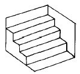
- 뮬러라이어의 도형
- 대비의 착시
- 상방거리의 과대시
- 반전실체의 착시
(정답률: 52%)
9. 큰 컴퍼스로 그리지 못하는 원을 그리는 제도 용구는?
- 스피링 컴퍼스(spring compass)
- 비례 디바이더(proportional divider)
- 비임 컴퍼스(beam compass)
- 먹줄펜(drawing pen)
(정답률: 86%)
10. 수목의 벌채시기로 적당한 것은?
- 봄에서 여름
- 여름에서 늦가을
- 늦가을에서 겨울
- 겨울에서 봄
(정답률: 94%)
11. 부조 기법의 순서가 올바른 것은?
- 외형선 긋기→원근감 표현→바닥 낮추기→마무리조각
- 외형선 긋기→바닥 낮추기→원근감 표현→마무리조각
- 바닥 낮추기→원근감 표현→외형선 긋기→마무리조각
- 바닥 낮추기→외형선 긋기→원근감 표현→마무리조각
(정답률: 80%)
12. 치수기입 요령에 관한 설명 중 올바른 것은?
- 원주와 둥근 구멍의 크기는 지름치수로 표시한다.
- 지름(ø)기호는 치수 숫자 뒤에 작은 크기로 쓴다.
- 180°이하의 원호크기는 지름치수로 표시한다.
- 반지름 기호 R은 치수 숫자 뒤에 같은 크기로 쓴다.
(정답률: 72%)
13. 접착제인 아교의 설명 중 잘못된 것은?
- 아교를 사용할 때는 접착면을 따뜻하게 하고 20% 포르말린 수용액을 칠하여 사용하면 좋다.
- 가열 시간이 오래된 것은 접착력이 저하된다.
- 60℃ 전후의 비교적 저온에서 가열 중탕 시킨다.
- 아교는 수용성이므로 수분이 있을 경우 접착력이 좋다.
(정답률: 76%)
14. 다음 합판 중 흡음성과 통기성을 가진 합판은?
- 화장합판
- 압형합판
- 유공합판
- 코아합판
(정답률: 78%)
15. 주먹장 맞춤 마름질에서 주먹장의 물매를 그릴 때 적합한 측정 기구는?
- 직각자
- 그무개
- 사각자
- 조합자
(정답률: 47%)
16. 세세션(Sezession)이란?
- 프랑스와 영국을 무대로 일어난 아카데미즘 부활 미술 운동
- 독일과 오스트리아를 무대로 일어난 반 아카데미즘 미술 운동
- 독일과 프랑스를 무대로 일어난 아카데미즘 미술운동
- 프랑스 파리를 중심으로 일어난 공예운동
(정답률: 83%)
17. 다음 나무 중 활엽수는?
- 삼나무
- 참죽나무
- 비자나무
- 소나무
(정답률: 68%)
18. 단판에 대한 설명 중 올바른 것은?
- 베니어(veneer)라고도 하며 두께 약 5mm 이하의 얇은판을 말한다.
- 플라이 우드(plywood)라고도 하며 두께 5mm 이상되는 판을 말한다.
- 베니어와 플라이우드의 통칭이며 판 두께는 여러가지가 있다.
- 얇게 재단한 원목판을 홀수로 교차하게 직교 시켜 서로 접착한 판을 말한다.
(정답률: 90%)
19. 빨강의 순색을 먼셀 색상기호로 표시한 것은?
- 5R 4/10
- 5R 4/14
- 10R 6/14
- 10R 4/14
(정답률: 75%)
20. 형태에 대한 설명 중 잘못된 것은?
- 현실적 형태는 자연형태와 인위적인 형태로 나눌 수 있다.
- 추상형태와 순수형태는 전혀 상관이 없다.
- 이념적 형태는 직접 감득되거나 지각되지 않는 형태이다.
- 조형이란 인간이 형을 성립 시켜 만든것을 말한다.
(정답률: 60%)
2과목: 목공예재료
21. 다음 그림은 어떤 작도를 나타 내는가?
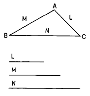
- 세변의 비례를 나타내는 도법
- 한각의 두변의 크기를 알고 삼각형 구하는 도법
- 삼각형에서 각변을 구하는 도법
- 주어진 세변을 가지고 삼각형을 구하는 도법
(정답률: 72%)
22. 다음 그림과 같이 절단한 경우의 단면도는?
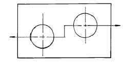
- 반단면
- 전단면
- 계단단면
- 부분단면
(정답률: 88%)
23. 한 덩어리의 목재에서 물체의 형태 전부를 사실과 같게 또는 추상형으로 입체조각을 하는 것은?
- 부조
- 투조
- 상감
- 환조
(정답률: 86%)
24. 사개맞춤 방법과 요령에 관한 설명 중 잘못된 것은?
- 필요한 부분과 필요 없는 부분을 구분하여 표시한다.
- 톱질은 먹줄선에 대고 톱질한다.
- 양쪽 마구리 면도 기준면에 대해서 직각이 되도록 한다.
- 전체적인 조립을 할 때는 90°를 확인하면서 조립한다.
(정답률: 86%)
25. 평대패 어미날 앞날의 각은 어느 정도가 적당한가?
- 10∼15°
- 15∼20°
- 25∼30°
- 35∼40°
(정답률: 76%)
26. 목재의 천연건조 방법과 관계가 먼 것은?
- 통풍이 잘되는 음지에 쌓아야 한다.
- 직사광선이 비치는 남향이 좋다.
- 지면에 닿지 않게 40-50㎝정도 기초하여 쌓는다.
- 마구리면에 페인트나 창호지로 도포하는 것이 좋다.
(정답률: 93%)
27. 산업 재해 중 가장 높은 재해 원인 ?
- 가공물의 복잡성
- 불안전한 작업자의 행동
- 작업장의 낮은 조명
- 기계의 노후
(정답률: 94%)
28. 목재의 실질부분만을 생각한 진비중은?
- 약 1.25g/cm3
- 약 1.54g/cm3
- 약 1.93g/cm3
- 약 2.47g/cm3
(정답률: 84%)
29. 조선시대 문화의 설명 중 잘못된 것은?
- 배불숭유 정책에 의하여 유교 문화의 발상이 되었다.
- 기능인들을 천대시 하여 박해하였다.
- 작품의 성격이 세련되고 우아하다.
- 민족적이며 풍토적인 특색을 나타 내었다.
(정답률: 69%)
30. 곡선, 곡면을 깎을 때 주로 사용하는 대패는?
- 옆대패.
- 평대패.
- 홈대패.
- 남경대패.
(정답률: 83%)
31. 다음 중 등대기 톱을 사용하는 일감은?
- 곡선 자르기
- 원형 오려내기
- 장부 어깨 자르기
- 홈 파기
(정답률: 89%)
32. 목재의 표면에 도장하는 목적과 거리가 먼 것은?
- 물체의 표면을 보호한다.
- 물체를 미화한다.
- 방습, 방균의 효과를 얻는다.
- 생재의 무늬를 살린다.
(정답률: 88%)
33. 기계 대패 사용시 지켜야 할 안전 수칙 중 잘못된 것은?
- 소매가 긴 옷은 걷어 올린다.
- 손의 보호를 위해 장갑을 착용한다.
- 300mm 이하의 작은 부재는 사용하지 않는다.
- 목재의 마구리 면은 깎지 않는다.
(정답률: 97%)
34. 다음 중 가장 부드러운 느낌을 주는 경우는?
- 채도와 명도가 낮은색
- 차가운 색계통
- 채도가 낮고 명도가 높은색
- 채도와 명도가 높은색
(정답률: 54%)
35. 율동에 포함되지 않는것은?
- 교체
- 단조
- 점이
- 균제
(정답률: 73%)
36. 목재 소지조정시 연마에 관한 설명 중 가장 올바른 것은?
- 하연마는 220-320#의 연마지를 사용한다.
- 연마의 방향은 반드시 목리와 평행하게 하여야 한다.
- 연마의 방향은 반드시 목리와 교차해서 하는 것이 좋다.
- 마무리 연마는 600-800#의 연마지를 사용한다.
(정답률: 70%)
37. 칠하기 전 바탕면 착색하기에 관한 설명 중 잘못된 것은?
- 착색한 후 직사광선에 건조시켜서는 안된다.
- 염료는 완전히 녹인 다음에 농도를 가감한다.
- 흡수가 많이 되도록 충분히 칠하는 것이 좋다.
- 염료가 완전히 녹지 않으면 얼룩이 생기기 쉽다.
(정답률: 87%)
38. 다음 끌에 관한 설명 중 잘못된 것은?
- 끌은 홈을 파거나 촉을 따낼 때 사용된다.
- 일반적으로 끌은 망치로 두들겨서 사용한다.
- 끝날의 각도는 20∼30°가 가장 적당하다.
- 세모끌은 끝날이 삼각형으로 되어 있으며, 대개 홈을 파는데 사용된다.
(정답률: 71%)
39. 다음 목재에 흠이 생기게 되는 원인 중 잘못된 것은?
- 나무가 자랄때 기후의 변화 때문에
- 나무가 자랄때 나이테 때문에
- 나무가 자랄때 생리적인 원인 때문에
- 나무가 자랄때 해충류의 침해 때문에
(정답률: 89%)
40. 조각칼 중 왼손용과 오른손용의 구분이 필요한 것은?
- 평칼
- 창칼
- 삼각칼
- 둥근칼
(정답률: 85%)
3과목: 목공예
41. 다음 그림에서 B의 명시도가 가장 높게 배색된 것은?
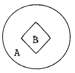
- A - 파랑, B - 흰색
- A - 노랑, B - 검정
- A - 노랑, B - 빨강
- A - 검정, B - 노랑
(정답률: 83%)
42. 띠톱기계 사용시 주의 사항을 설명한 것 중 틀린 것은?
- 작동 전에 기계의 이상 유무를 확인한다.
- 완전한 속도가 나온 후 사용한다.
- 급한 곡선일수록 폭이 넓은 톱날을 사용한다.
- 긴 목재를 가공할 때는 다른 사람의 도움을 받는다.
(정답률: 86%)
43. 함수율 계산식이 올바른 것은?
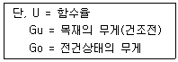
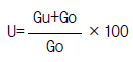
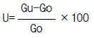
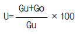
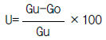
(정답률: 82%)
44. 수렴, 통, 대못, 자 등의 재료에 적합하며 높이가 15-20m정도로 마디가 길고 가늘게 자르기에 적합한 대나무는?
- 당죽
- 맹족죽
- 흑죽
- 진죽
(정답률: 72%)
45. 다음 중 비중이 높아 물에 갈아 앉는 목재는?
- 흑단
- 마호가니
- 단풍나무
- 갈참나무
(정답률: 74%)
46. 그무개로 금긋기를 할 때 필요한 공구로만 이루어진 것은?
- 줄 그무개, 장부 그무개, 망치
- 줄 그무개, 장부 그무개, 사각자
- 줄 그무개, 장부 그무개, 내경퍼스
- 줄 그무개, 장부 그무개, 먹통
(정답률: 75%)
47. 원호의 치수기입법 중 기호 R을 붙이지 않을 때는?
- 아주작은 원호
- 아주큰 원호
- 중심이 표시된 원호
- 중심이 표시되지 않은 원호
(정답률: 74%)
48. 휴대용 루터기의 사용에 관한 설명 중 잘못된 것은?
- 기계 보내기가 너무 늦으면 나무를 태우게 되고, 커터가 담금질이 되는 원인이 된다.
- 휴대용 루터기의 축 회전수는 20000회/분 정도 이다.
- 휴대용 루터기는 일반적으로 통맞춤, 주먹장 맞춤, 홈파기, 연귀맞춤을 만드는데 사용된다.
- 깎기의 춤은 바이트 길이와 모터를 위 아래로 움직일 수 있는 거리에 의해 결정한다.
(정답률: 77%)
49. 포장, 천정, 벽, 바닥의 색 선택에 가장 필요한 색 관계는?
- 색의 동정감
- 색의 시인도
- 색의 중량감
- 색의 피로감
(정답률: 97%)
50. 피하 출혈시 냉습포를 하여 출혈이 멈추면 온습포를 하는 이유는?
- 혈액 순환을 촉진 시키기 위하여
- 출혈이 더 잘 멈추게 하기 위하여
- 세균의 감염을 방지하기 위하여
- 의식을 회복시키기 위하여
(정답률: 71%)
51. 색상을 둥글게 배열한 모형은?
- 색지각
- 색감각
- 색상환
- 등색상면
(정답률: 93%)
52. 다음 도료 중 적당한 온도와 습기가 있어야만 건조가 되는 것은?
- 보디니스
- 폴리우레탄래커
- 유성에나멜
- 옷칠
(정답률: 89%)
53. 판목방향(나이테 방향), 정목방향(나이테와 직각방향), 주축방향(섬유방향)에 대한 목재 수축 비율은?
- 1 : 10 : 20
- 10 : 1 : 20
- 10 : 20 : 1
- 20 : 10 : 1
(정답률: 80%)
54. 파랑, 바다색, 초록 등의 한색만을 배색 하였을 때의 느낌은?
- 화려하다
- 침착하다
- 활동적이다
- 우울하다
(정답률: 73%)
55. 한면이 정5각형인 정다면체는 몇 면체인가?
- 정팔면체
- 정십이면체
- 정이십면체
- 정삼십이면체
(정답률: 80%)
56. 다음 그림의 투상도는?
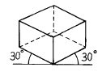
- 정투상도
- 사투상도
- 등각투상도
- 부등각투상도
(정답률: 94%)
57. 다음 가법혼색을 표시한 그림에서 A에 들어가야 할 색은?
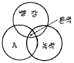
- 노랑
- 파랑
- 청록
- 주황색
(정답률: 78%)
58. 가열공기의 수증기 압력저하로 목재를 건조시키는 방법은?
- 전열건조
- 증기건조
- 진공건조
- 훈연건조
(정답률: 77%)
59. 다음 그림에서 a에 해당하는 이름은?
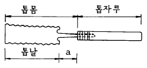
- 톱머리
- 톱허리
- 톱목
- 톱대
(정답률: 82%)
60. 다음 선에 대한 느낌의 설명 중 잘못된 것은?
- S커어브 곡선 - 화려함, 안정, 명료
- 와선 - 복잡, 장려, 불명료
- 수평선 - 안식감, 침착, 안정
- 직선 - 남성적, 명료, 강직
(정답률: 73%)